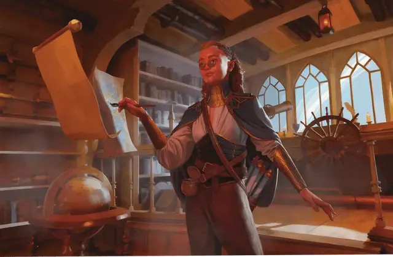

Кхоравар
Khoravar

Тип существа Гуманоид
Размер Средний (рост около 4–6 футов) или Маленький (рост около 2–4 футов); выберите при выборе этого вида
Скорость 30 футов
На протяжении столетий потомки союзов людей и эльфов создавали в Кхорваире свои отдельные сообщества и традиции. Эта культура особо развилась с возвышением Дома Лирандар и Дома Медани. Членам этих сообществ не нравится название "полуэльфы", поэтому они называют себя кхораварами, что в переводе с эльфийского означает "дети Кхорваира".
Многие кхоравары поддерживают идею "моста между", полагая, что их призвание - способствовать общению и сотрудничеству между представителями разных культур или видов. Кхоравары, следующие этой философии, часто становятся бардами, дипломатами, посредниками или переводчиками. Другие, вдохновлённые своей пусть и отдаленной связью с феями, стремятся построить мосты между материальным миром и Царством Фей Теланиса; эти кхоравары часто становятся друидами или колдунами, служащими архифеям.
Особенности
Вы обладаете следующими особенностями вида:
Тёмное зрение. Вы обладаете Тёмным зрением дальностью 60 футов.
Наследие фей. Вы совершаете с Преимуществом спасброски на избежание или окончание состояния Очарованный.
Дар фей. Вы знаете заговор Дружба. Каждый раз, когда вы завершаете Долгий отдых, вы можете заменить этот заговор другим заговором из списка заклинаний Волшебника, Друида или Жреца. Заклинательная характеристика для заговора, полученного вами от этой особенности — Интеллект, Мудрость или Харизма; выберите её при выборе этого вида.
Сопротивление летаргии. Когда вы проваливаете спасбросок на избежание или окончание состояния Бессознательный, можете вместо провала преуспеть. Как только вы используете эту особенность, вы не можете сделать это снова, пока не завершите 1к4 Долгих отдыхов.
Универсальные умения. Вы получаете владение одним навыком или инструментом на ваш выбор. Каждый раз, когда вы завершаете Долгий отдых, можете заменить это владение другим владением навыком или инструментом.